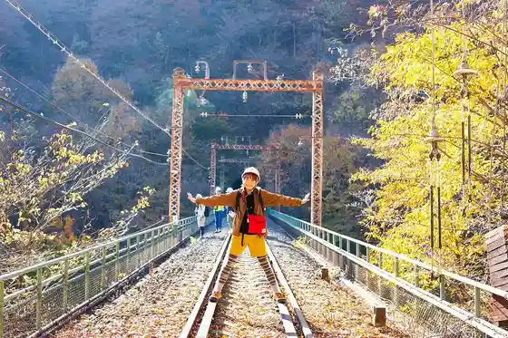
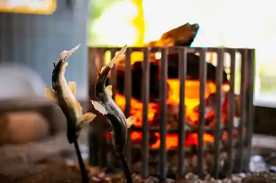
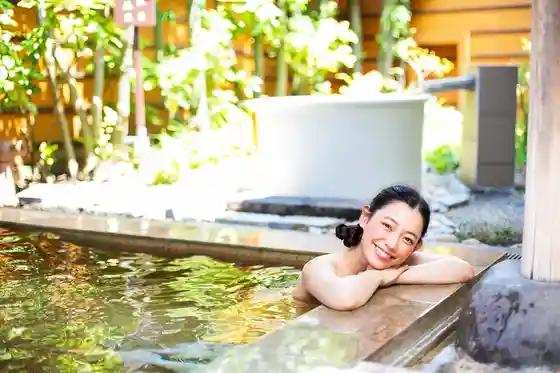

Haisen Uoku
Annaka, Gunma · 027-329-6203 · Official / source link

Megumi Baths Suna Shioburo
Annaka, Gunma · 027-329-6203 · Official / source link
Ayu no Shioyaki Ki Experience
Annaka, Gunma · 027-385-6959 · Official / source link

Koibito no Seichi
Annaka, Gunma · 027-329-6203 · Official / source link

Isobe Onsen
Annaka, Gunma · 027-329-6203 · Official / source link
Usuitoge (Megane Hashi)
Annaka, Gunma · 027-382-1111 · Official / source link
Usuitoge Tetsudo Bunka Mura
Annaka, Gunma · 027-380-4163 · Official / source link
Usui Seishi (Kabu)
Annaka, Gunma · 027-393-1101 · Official / source link
(Ari) Ote Seika
Annaka, Gunma · 027-385-6224 · Official / source link
Jisho Tera Yaki Sato Aki Kama
Annaka, Gunma · 027-382-5560 · Official / source link
Isobe Yana
Annaka, Gunma · 027-385-6959 · Official / source link
Matsuida Bara Sono
Annaka, Gunma · 027-393-3962 · Official / source link
Robai no Sato
Annaka, Gunma · 027-382-1111 · Official / source link
Gunma Furawahai Land
Annaka, Gunma · 090-8818-9221 · Official / source link
Akima Umebayashi
Annaka, Gunma · 027-382-1111 · Official / source link
Mokuba Se (Chimase) no Fukuju Kusa
Annaka, Gunma · 027-382-1111 · Official / source link
Akima Kambai Park
Annaka, Gunma · 027-382-1111 · Official / source link
Kyu Maruyama Hendensho
Annaka, Gunma · 027-382-1111 · Official / source link
Usui Sekisho Ato
Annaka, Gunma · 027-382-7622 · Official / source link
Niijima Jo Kyutaku
Annaka, Gunma · 027-382-7622 · Official / source link
Kyu Usui Gun Yakusho
Annaka, Gunma · 027-382-7622 · Official / source link
Mokuba Se (Chimase) no Fukuju Kusa Jisei Chi
Annaka, Gunma · 027-382-1111 · Official / source link
Kitano Tera
Annaka, Gunma · 027-329-6203 · Official / source link
Ta Sedai Koryu Kata Kosodate Shien Kyoten Annaka Sumairu Park
Annaka, Gunma · 027-380-2525 · Official / source link
Hana Hana no Rakuen Airisu no Oka
Annaka, Gunma · 027-385-5822 · Official / source link
MELODIC LIGHT WALK
Annaka, Gunma · Official / source link